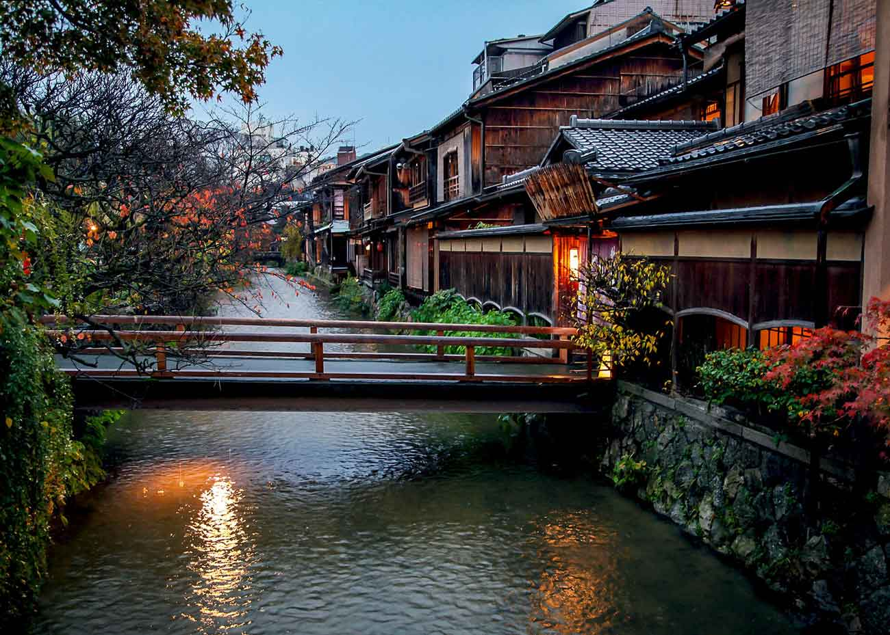
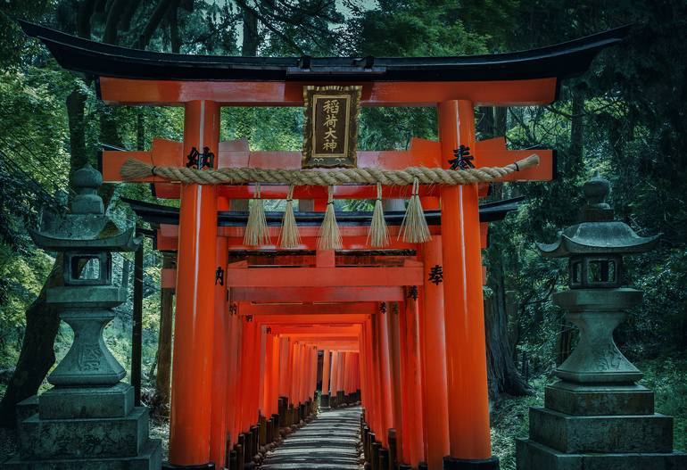
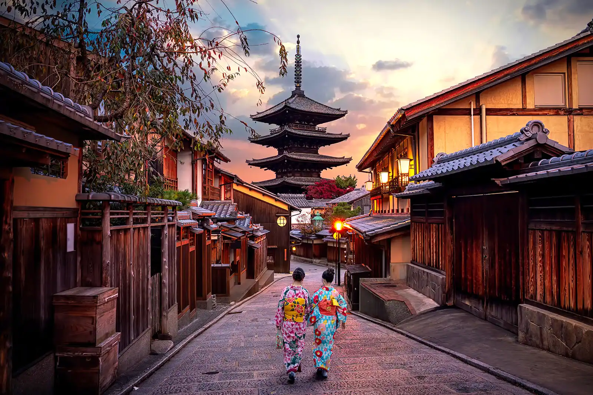
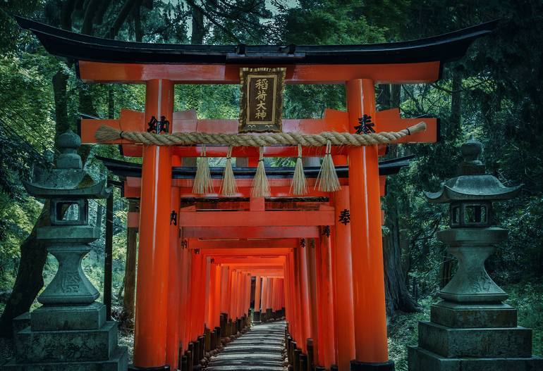
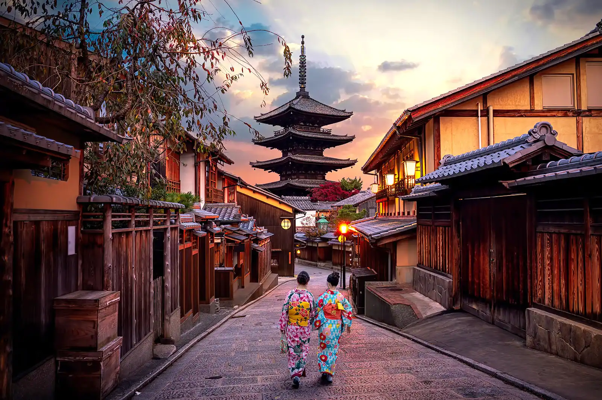
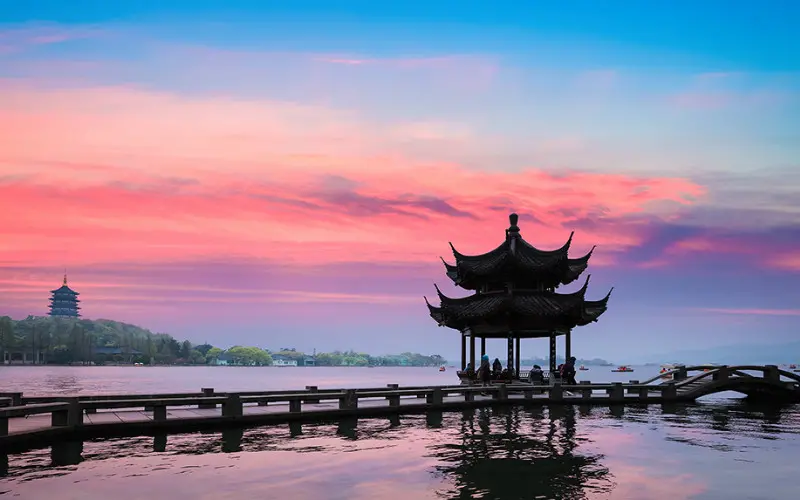

Rome, Italy

Rome is one of the oldest metropolitan areas in the world. With a history dating back to 700 BC with the birth of the Roman Empire, the city has maintained its status as a cultural and historical hub of Europe. The city is peppered with ancient monuments, statues, and piazzas from different eras of history. The most famous location, the Colosseum, is touted as one of the seven modern wonders of the world. Rome houses several world famous museums, such as the Borghese and the Vatican Museum. It is also the only city in the world to encompass a recognized country, Vatican City.
Rome is also a great location for food, wine, and leisure. At the heart of Italy, Rome is a central gathering place for a diverse array of Italian cuisine; Neapolitan Pizza from the south, Tuscan wine, and truffle from the north. Rome’s most famous dish is carbonara. Beyond the food, Rome has a vibrant nightlife. The Trastevere neighborhood has plenty of bars and clubs for patrons and, just over the river, Centro’s shopping district is always bustling.
Sights
- Colosseum
- Trevi Fountain
- Vatican City
Photo Gallery

Kyoto, Japan
Kyoto, once the capital of Japan, is a city on the island of Honshu. It's famous for its numerous classical Buddhist temples, as well as gardens, imperial palaces, Shinto shrines and traditional wooden houses. It’s also known for formal traditions such as kaiseki dining, consisting of multiple courses of precise dishes, and geisha, female entertainers often found in the Gion district.
Kyoto is considered the cultural capital of Japan and is a major tourist destination. Prominent landmarks include the Kyoto Imperial Palace, Kiyomizu-dera, Kinkaku-ji, Ginkaku-ji, and Kyoto Tower. The internationally renowned video game company Nintendo is based in Kyoto. Kyoto is also a center of higher learning in the country, and its institutions include Kyoto University, the second-oldest university in Japan.
Sights
- Kiyomizu-dera
- Fushimi Inari Shrine
- Yasaka Pagoda
Photo Gallery
 



Hangzhou, China
Hangzhou is the capital and most populous city of Zhejiang, China. It is located in the northeastern part of the province, sitting at the head of Hangzhou Bay, which separates Shanghai and Ningbo. Hangzhou grew to prominence as the southern terminus of the Grand Canal and has been one of China's most renowned and prosperous cities for much of the last millennium.
Although Hangzhou has been through many recent urban developments, it still retains its historical and cultural heritage and natural environment. Today, tourism remains an important factor for Hangzhou's economy.[92] One of Hangzhou's most popular sights is West Lake, a UNESCO World Heritage Site. The West Lake Cultural Landscape covers an area of 3,323 ha (8,210 acres) and includes some of Hangzhou's most notable historic and scenic places. Adjacent to the lake is an area which includes historical pagodas, cultural sites, as well as the natural environment of the lake and hills, including Phoenix Mountain. There are two causeways across the lake.
Sights
- West Lake
- Lingyin Temple
- Six Harmonies Pagoda (Liuhe Pagoda)